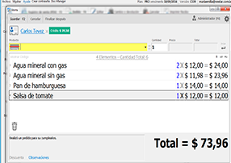

Proyecto de sesiones hecho en Java puro Mar 11, 2021 Un sistema de ventas es el proceso por el cual pasa un cliente, desde que se encuentra en la etapa de prospección, hasta que se convierte en un cliente adoptado. ... Alguna inconsistencia en el sistema de ventas, puede provocar que el prospecto no decida comprar tu producto, es decir, que pierdas la ventas. 
Proyecto hecho en PHP Yii2 Dec 4, 2020 Un sistema de ventas es el proceso por el cual pasa un cliente, desde que se encuentra en la etapa de prospección, hasta que se convierte en un cliente adoptado. ... Alguna inconsistencia en el sistema de ventas, puede provocar que el prospecto no decida comprar tu producto, es decir, que pierdas la ventas.

 Seguir
Seguir